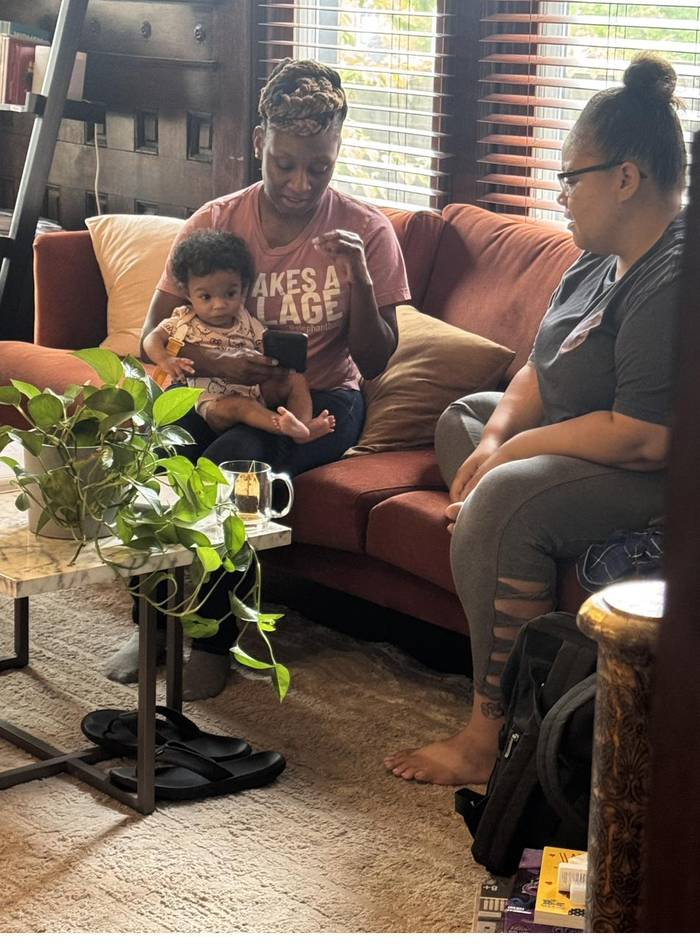
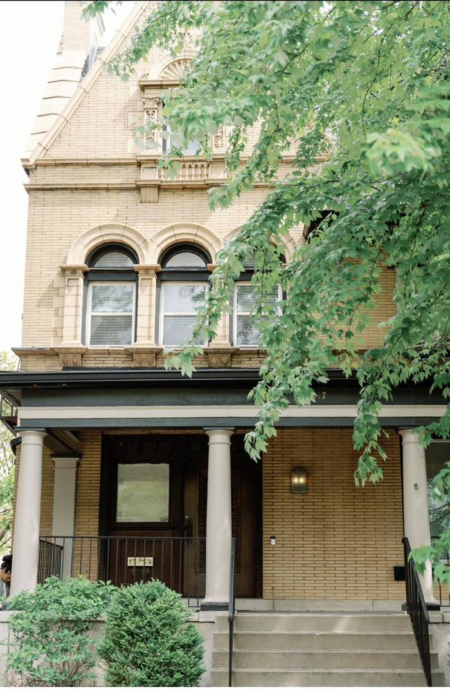
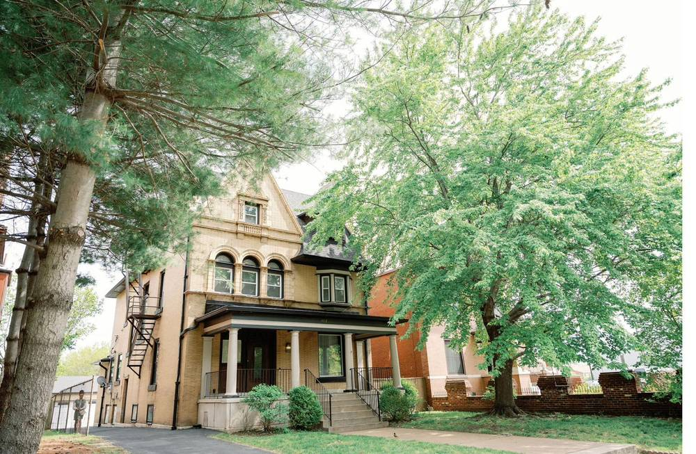
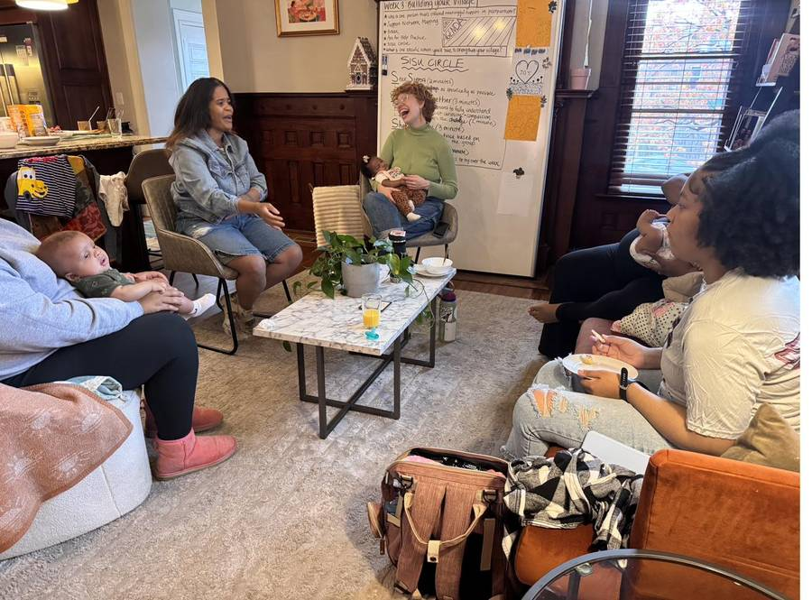
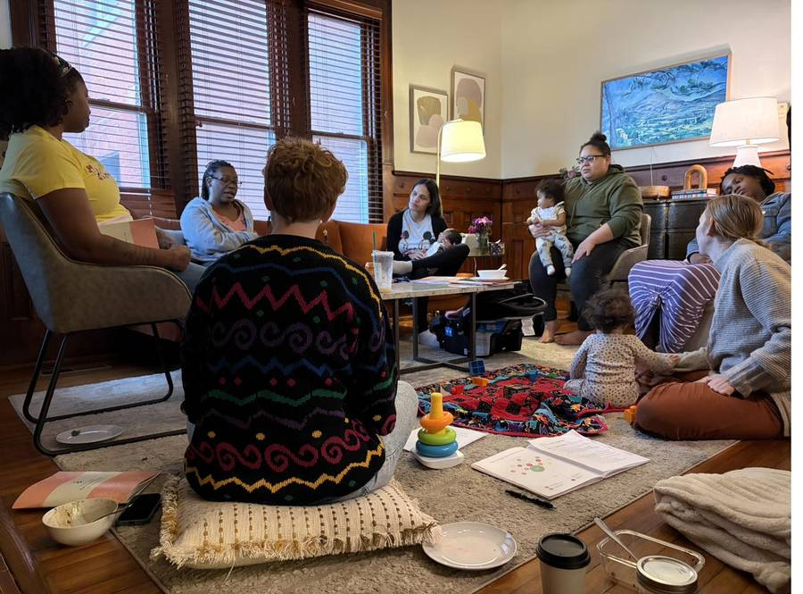
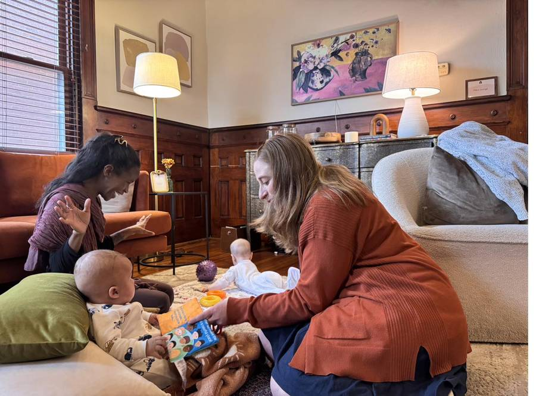
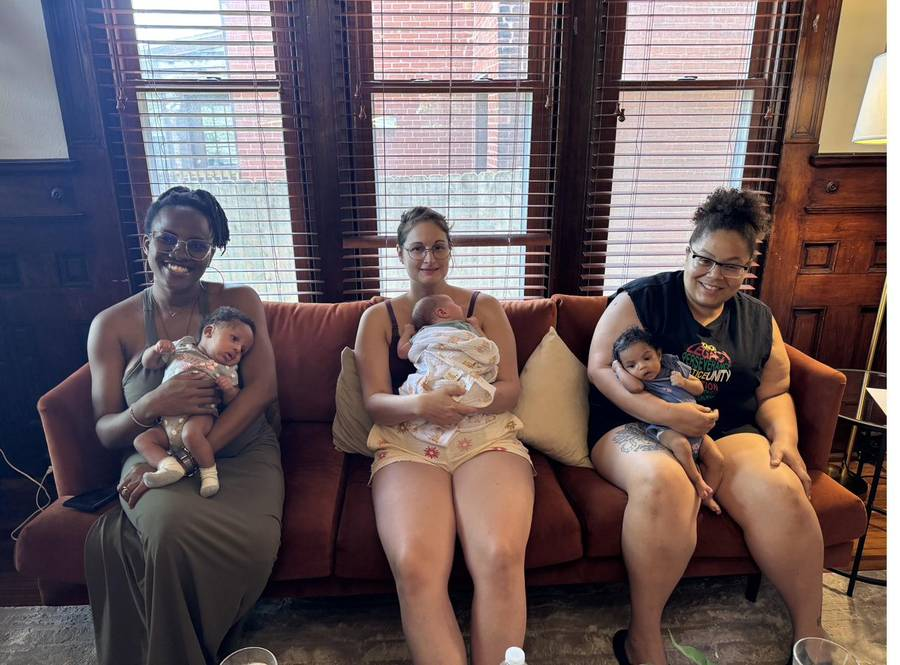

It disappeared because nobody rebuilt the infrastructure. Village Care™ is a proven clinical model for social health — delivered by trained Family Transition Specialists℠, in community-based homes, using an integrated care platform.
Social determinants drive 80% of health outcomes — but the doulas, home visitors, peer supporters, and community health workers who deliver social health have had no building, no platform, no billing infrastructure, and no standardized way to prove they work.
Hospitals, clinics, telehealth. Built over a century. Multi-trillion-dollar infrastructure.
Therapy offices, telehealth platforms. Alma, Headway — raised $300M+. A decade of focused investment.
Peer support, home visits, SDOH navigation, continuous relationships through life transitions. No delivery system — until Village Care.
Village Care replaces fragmented services with one continuous relationship — from pregnancy through 18 months postpartum, and eventually across every life transition. It runs on three integrated components.

A new professional category combining doula, community health worker, home visitor, and peer facilitator skills. Trained through THRIVE, the Foundation's evidence-based certification pathway. Our FTS walk alongside families from pregnancy through 18 months postpartum — one trusted person instead of four disconnected providers.

Residential homes, not clinics. A living room where peer circles meet, where new parents rest, where the village gathers. Our flagship Korédé House is at 4317 Forest Park Avenue in St. Louis — a restored historic home that has become the physical infrastructure of the model we're building.
The HIPAA-compliant technology that powers every Village Care deployment. Stage Care is operated by our technology partner, Korede Inc., and provides the clinical EHR, client app, Medicaid billing, and outcomes dashboards that allow Village Care to scale with fidelity.
We don't recruit FTS from outside the neighborhoods we serve. We hire the mothers who once received Village Care, and we walk with them from lived experience to living-wage professional certification. Every stage pays. Every stage welcomes their babies.
Most workforce programs lose women at the first rung because they can't afford childcare to attend training. We designed ours so the work is compatible with having a baby present. Mothers build careers while their children are with them. The community trains the community. Outcomes compound across generations.
Not self-reported. Not anecdotal. Our platform captures clinical outcomes in real time — screenings, visits, alerts, and follow-ups — published monthly with the St. Louis Department of Health and in peer-reviewed research.
A single preterm birth averted saves $76,000 in NICU and downstream costs. The ROI math for Medicaid MCOs is overwhelming. And the families are healthier.
Korédé House, at 4317 Forest Park Avenue in St. Louis, is the Foundation's flagship — a residential building transformed into a community-centered home for maternal health, peer connection, and continuous care. It is the physical proof that Village Care works, and the model we replicate.

Village Care looks like this: women in SISU Circles, babies on laps, specialists sitting cross-legged on the floor, children playing with blocks between conversations. This is clinical work delivered the way care used to be delivered — before hospitals, before insurance, before the village disappeared.




Our outcomes are reviewed and published with the St. Louis Department of Health and academic partners. We believe the model works because we've measured it — and because we've put our data where others can check it.
A community-based study of 75 Medicaid-enrolled families receiving Village Care from prenatal through 18 months postpartum. Primary outcome: 78.4% reduction in preterm birth odds compared to matched controls. Secondary outcomes: 100% postpartum follow-up, 87% below EPDS depression threshold, NPS 86.
An ROI analysis quantifying the per-member cost savings from Village Care versus standard Medicaid prenatal care. Preliminary findings suggest 4:1 ROI at $275 PMPM over 18 months of enrollment.
Active and pending research partnerships include Washington University, BJC Healthcare, SSM Health, and the St. Louis Department of Health. If you're an academic, public health agency, or journalist who wants access to our full outcomes data, we'll share it.
Village Care deployments are operated in partnership with Korede Inc., our technology and operations partner. Whether you're an MCO, a health system, a state agency, or a community organization — there is a configuration that fits.
Your existing community partners adopt the Village Care model, use the Stage Care platform, and bill Medicaid through our revenue cycle management. You add fidelity and outcomes measurement without rebuilding your workforce.
We bring the full Village Care model to your members: certified Family Transition Specialists, a Korédé House or equivalent community space, clinical oversight, platform, and billing. Deployed in 4–6 weeks. Your members, our infrastructure.
Statewide ILOS deployments, workforce development grants, and policy partnerships. Village Care becomes a named service under your Medicaid program, with the Foundation as the fidelity body and Korede Inc. as the operational partner.
Founded in 2025 in St. Louis, Missouri. A 501(c)(3) nonprofit rebuilding the village through people, place, and platform.
18 years in financial services (SVP, Wells Fargo Advisors; FINRA Series 7 & 24). After experiencing postpartum depression as a mother of four, Ronke left Wall Street to build what healthcare couldn't — a continuous, relational care model for new families.
She designed Village Care, co-deployed Stage Care with partners, and led the published research producing 78.4% reduction in preterm birth odds across 75 families. Featured in NPR, Entrepreneur.com, and St. Louis Magazine.
MCOs, health systems, state agencies, and CBOs ready to explore Village Care deployment.
Schedule a callDoulas, CHWs, and community members interested in becoming a Fellow or Family Transition Specialist.
Apply to the FellowshipResearchers, journalists, and policymakers requesting the full outcomes study or an interview.
Request materials